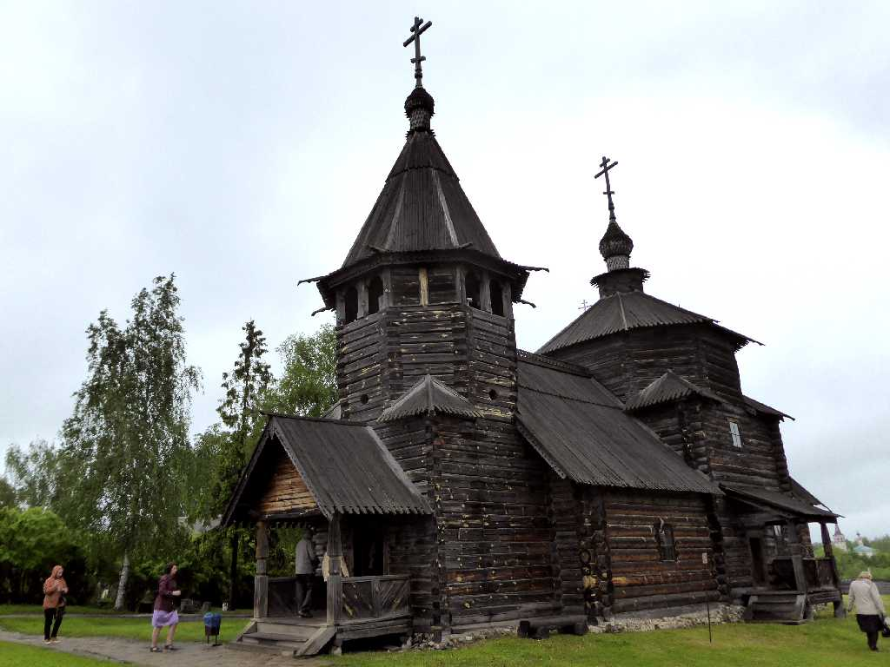
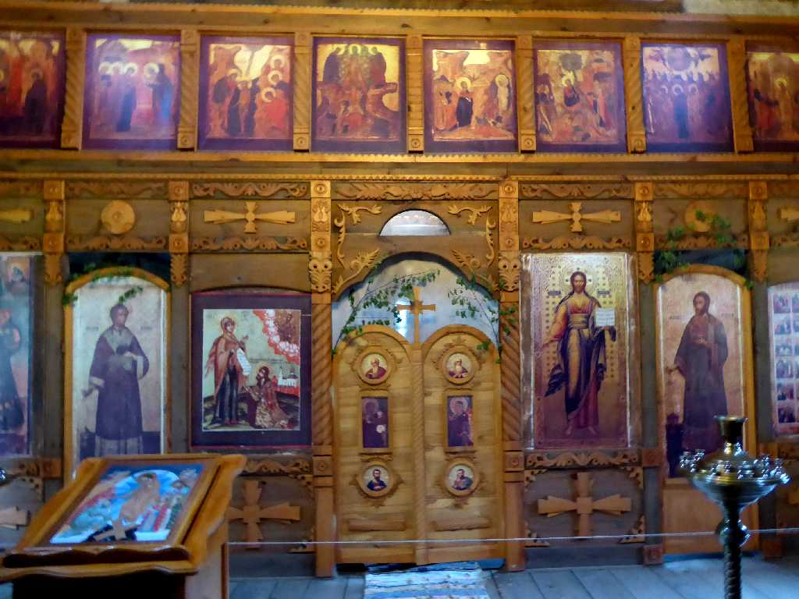
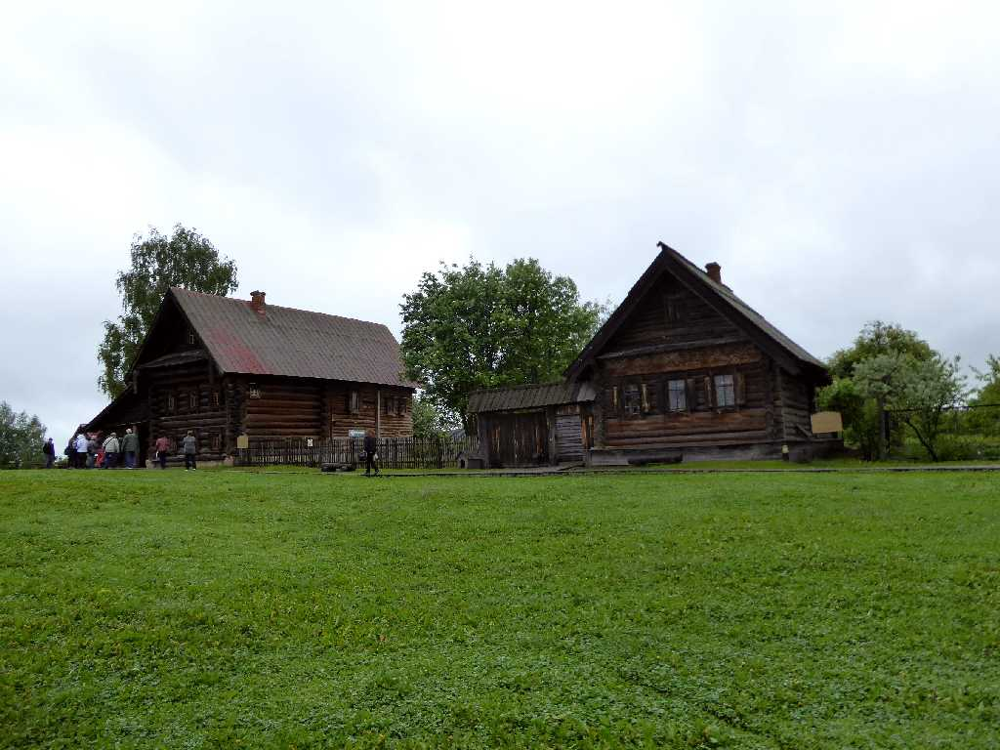
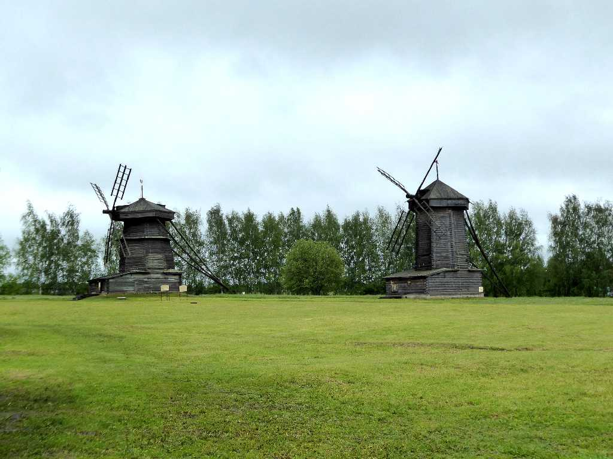
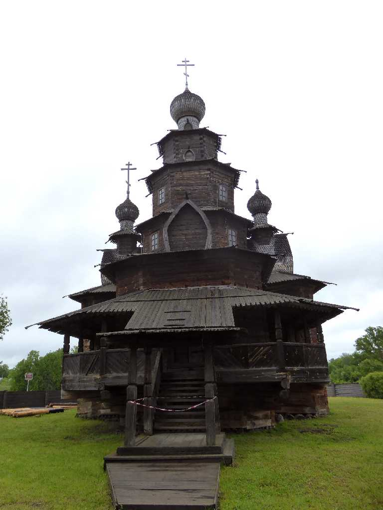
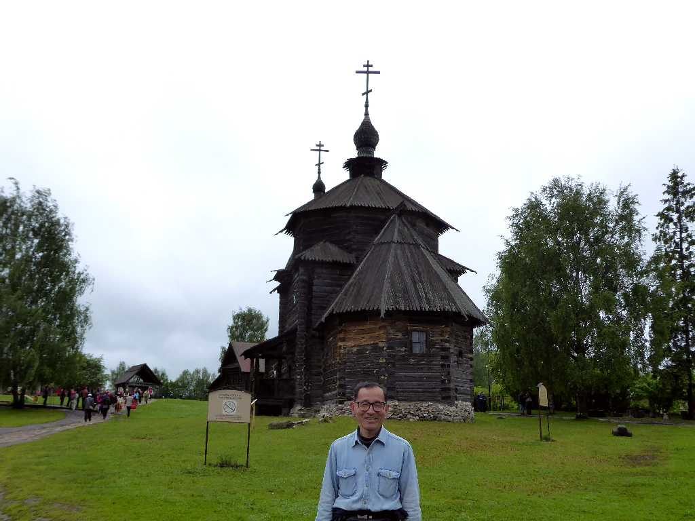
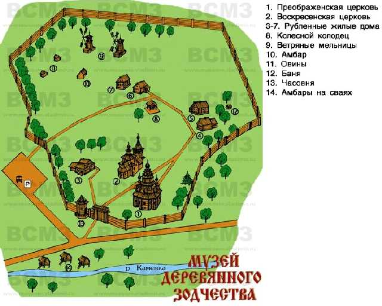

Wooden Church Museum of Wooden Architecture and Peasant Life Suzdal
スーズダリの木造建築と農民生活博物館

Altar Wooden Church

Farmer

Windmill

Wooden Church

June 6 2017 Museum of Wooden Architecture and Peasant Life
